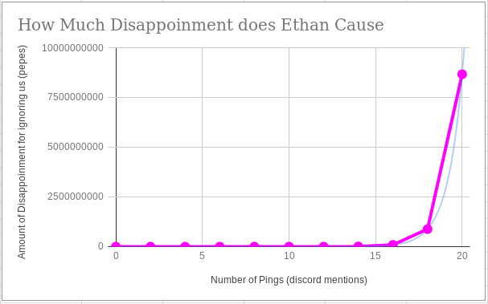

| Home | FAQ | About Ethan | Contact Info |
|
I haven't figured out what this is for, but it makes some nice spacing. ©HydroPlume 2420 |
Do you know this man??!?
Just take a look at that loot! WOW! This is a man that knows what he likes Pictured above: The magic man coming back from a raid with hundreds of pounds of swag for his supporters. |
Ethan Bonavida is the president of the Computer Science club here at Moorpark College. as the president of our very special club, Ethan has many jobs, including:
Now I know what you're thinking here: there couldn't possibly be a man capable of doing all these things. Well, you're right: Ethan is actually 1/36th part redwood. I don't know how that works either, but it means he's not just a man. We haven't noticed anything very redwood about him, though. However, upon being elected president of the Enthusiastic Programmers club, the Bonafide Bonavida gained the power of omniscience, which only increased the radiance of his awesome. Instead of having 50 times the power level of a regular human, he now has an effectively infinite advantage over the average person. This makes him even more capable of the job entrusted to him by the good club members of Enthusiastic Programmers. This hero is so well liked, that he often can't play his recent favorite game, Destiny 2, in peace and quiet from his bothersome followers' questions and attention. The following is a graph showing the amount of disappointment accrued from Ethan's dismissal:  |
|